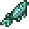
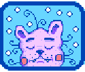

File:Sturgeon.png
Jump to navigation
Jump to search

{kind=link}
No higher resolution available.
Sturgeon.png (48 × 48 pixels, file size: 614 bytes, MIME type: image/png)
Licensing
|  | This file (or parts of it) is copyright © ConcernedApe 2016
This screenshot, texture, audio, song, or other Stardew Valley asset, or derivative of Stardew Valley assets, does not fall under the Stardew Valley Wiki's Terms of Service but is freely usable on this wiki. |
File history
Click on a date/time to view the file as it appeared at that time.
| Date/Time | Thumbnail | Dimensions | User | Comment | |
|---|---|---|---|---|---|
| current | 20:37, 29 January 2016 | 48 × 48 (614 bytes) | Katzeus (talk | contribs) |
You cannot overwrite this file.
File usage
The following 22 pages use this file:
- Animals
- Bundles
- Dyeing
- Fish
- Fishing Strategy
- Krobus
- List of All Gifts
- Quality Fertilizer
- Remixed Bundles
- Stardew Valley Fair
- Sturgeon
- Summer
- Tailoring
- The Mountain
- Traveling Cart
- Willy
- Winter
- User:Artoftheblue/Fish Pond
- User:Margotbean/Sandbox/StickiedUniversalGifts
- User:Zamiel/Gold to Energy Ratios
- Template:FishLocations Mountain
- Modding:Items/Object sprites
{kind=link}